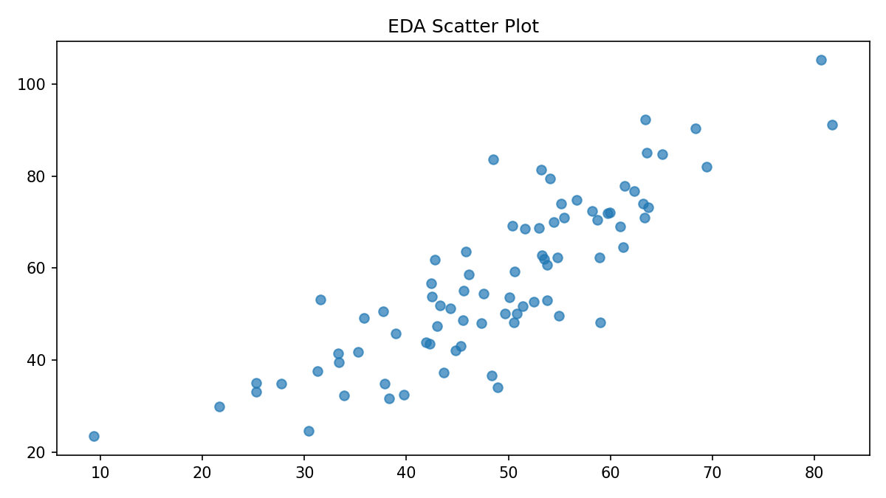
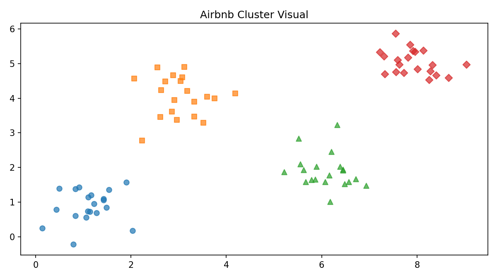
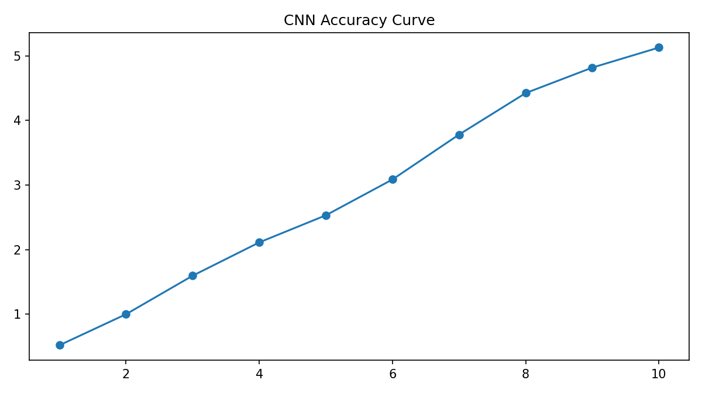
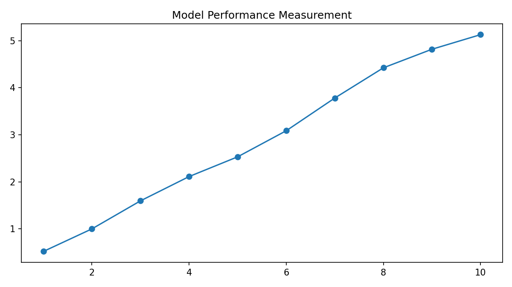

Ruwan Perera | Unit 12 submission portfolio
This e-portfolio brings together development across all 12 units of the machine learning module. It includes artefacts, project work, evaluation, and a final reflection focused on technical learning, collaboration, ethics, and professional growth.
All 12 units are included with unit-by-unit summaries, technical outputs and critical learning points.
The portfolio includes the Unit 6 proposal, Unit 11 final project evaluation, and a CNN object recognition page.
Charts and visual outputs are embedded directly in the relevant pages so the site renders without external dependencies.

Exploratory data analysis output

Airbnb clustering artefact

CNN learning curve

Model performance measurement